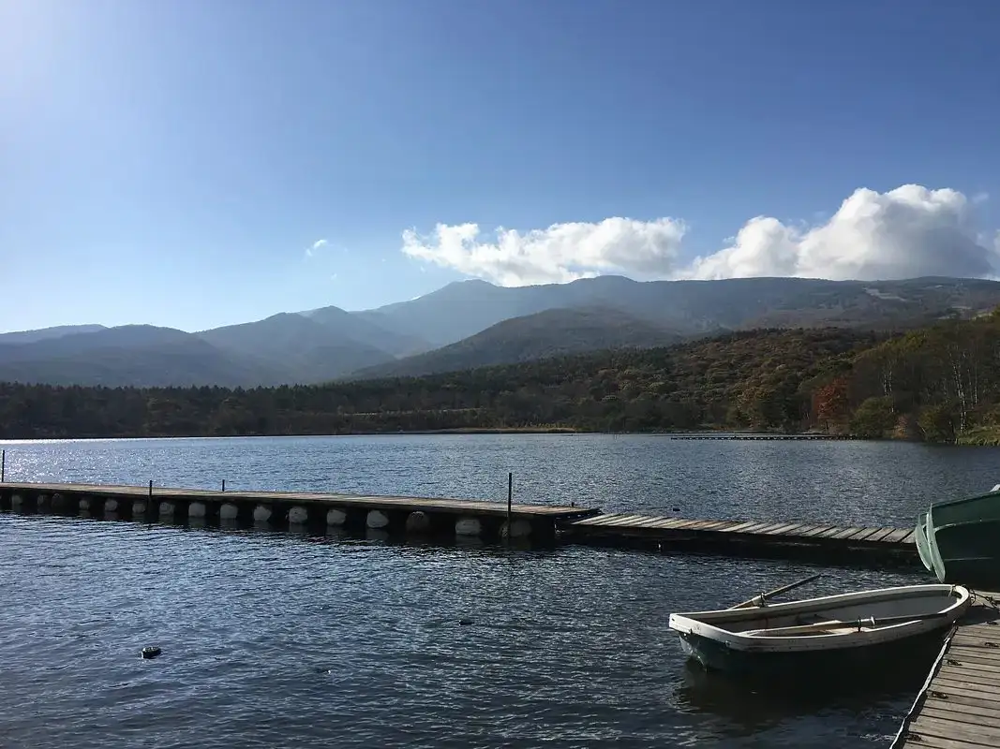
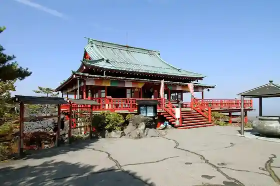
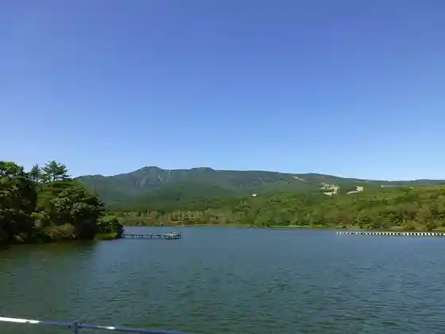
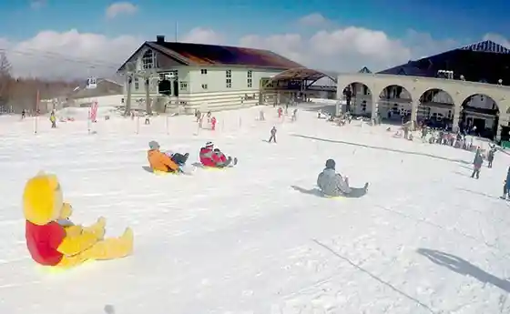

Tsumagoi
Tsumagoi · Gunma
Tsumagoi
Highlighted on the Gunma map.

Sights
Onioshidashi Shi Sono

Mujirushiryohin Kanpanya Tsumagoi Campground

Kyabetsu no Naeue E Shukaku Experience
Parukoru Tsuma Koi Sukii Resort

Azumaya Yama
Baragi Mizumi
Ushi Ike
Karuizawa Omocha Okoku
Rogukoteji Furiitaimu